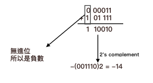
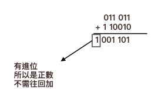
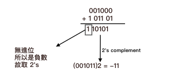

Chapter1-基本電腦概論-補數(Complement)
1.3 補數
補數
目的： 簡化減法過程，縮減電路成本
作法： 利用 “補數相加”“取代減法”
ex: A - B = A + B' => (-B)
定義： 一數值 N (整數 n 位，小數 m 位)，基底為 b
- b's 補數：
(1) b^n - N, if N 不等於 0
(2) 0, if N = 0 - (b-1)'s 補數：
b^n - b ^ -m - N
ex: (49.2)10, 求 10's 補數及 9's 補數
Sol:
N = 49.2, b = 10, 整數位數 n = 2, 小數位數 m = 1
10's 補數： 10^2 - 49.2 = 50.8
9's 補數： 10^2 - 10^-1 - 49.2 = 100 - 0.1 - 49.2 = 50.7
快速解法：
欲求 b 進制的： (b-1)'s 補數：拿(b-1) 去減每一位數
b's 補數：將(b-1)'s 補數之最後位元 +1 即(b-1)'s complement + b^-m
ex: (1783.25)10, 求 10's 及 9's complement.
Sol:
1. 9's complement
正：10000 - 0.01 - 1783.25 = 8216.74
快：9999.99 - 1783.25 = 8216.74
2. 10's complement
正：10000 - 1783.25 = 8216.75
快：8216.74 + 0.01 = 8216.75
ex1: 更快解
(10101000)2 求 1's 及 2's
1's: 01010111 => 1 -> 0, 0 -> 1
2's: 將最右 "1" bit 之前皆保留，其餘 1 -> 0, 0 -> 1
1010|1000 => 01011000
ex2: (0.01010)2
1's: 0.10101
2's: 0.010|10 => 0.10110
整數的表示方法
- Unsigned (無號數)：無負數，無正負號，若有 N 個 bits，可表示範圍： 0 <= x <= 2^N -1
- Signed(有號數)：指令以最左邊之 bits 表示正負號，如下：
 表示方法：
表示方法：
正數： 最大範圍 -> 2^N-1 -1
負數：
(1) 符號大小值法 (Sign Magnitude)
(2) 1's 補數表示法 (1's complement)
(3) 2's 補數表示法 (2's complement)
Compare

ex1: 將下列值分別採 (1)符號大小 (2)1's 補數表示法 (3)2's 補數表示法
(1) +7 (2) -11 (3) -16 (4) 可表示 range?
Sol:
(1) 符號大小
+7 => 0 | 0111
-11 => 1 | 1011
-16 => 無法表示，因為 underflow
5 bits 可表示 range => -(2^5-1 -1)~ +(2^5-1 -1) => -15 ~ +15
(2) 1's complement 表示
+7 => 0 | 0111
+11 = (01011)2 => 1's => 1 | 0100 => -11
-16 => 無法表示
-(2^5-1 -1) ~ +(2^5-1 -1) => -15 ~ +15
(3) 2's complement 表示
+7 => 0|0111
+11 => 0|1011 => 2's => 1|0101 => -11
+16 => 10000 => 2's => 10000 => -16
5 bits 的 range => -2^5-1 ~ 2^5-1 -1 => -16 ~ +15
ex2: 8 bits, 採 1's 補數, 表示 (1) 0 (2)最大,最小值
Sol:
(1)
+0: 00000000
-0: 11111111
(2)
8 bits 可表示 range:
=> -(2^8-1 -1) ~ +(2^8-1 -1)
=> -127 ~ +127
所以 最大：+127 01111111
最小： -127 10000000
ex3: 7 bits: 1101001 「反向」分別以 (1) Sign Magnitude (2) 1's complement notation (3) 2's complement notation 求原始值？
Sol:
(1) Sign Magnitude
1101001
-(101001)2 = -41
(2) 1's Complement notation
1|101001 => 1's => -(010110)2 = -22
(3) 2's Complement notation
1101001 => 2's => -(010111)2 = -23
1's 及 2's complement 的整數運算法則
-
1's complement
同號：直接相加
異號：將減法變成補數的相加A-B = A+(B 的 1's 補數)
作法：- B 變成 1's complement
- A+(B 的 1's complement)
- 檢查最高位元有無溢位
無進位 => 負值
有進位 => 正值(須作端迴進位相加)
-
2's complement
同號：直接相加
異號：將減法變成補數的相加
作法：- A+(B 的 2's complement)
- 檢查最高位元有無進位
無進位 => 負值, 取 2's complement
有進位 => 正值, 進位捨去 (不須作端迴進位相加)
Ex1: 24-6, 6 bits 採 1's, 求過程？
Sol:
24 - 6 = 24 + (-6)
+24 = 011000
+6 = 000110 => 1's => 111001 => -6

Ex2: 3-17, 6 bits 採 2's, 求過程？
Sol:
3-17 = 3+(-17)
+3 = (000011)2
-17 = (010001)2 => 2's => (101111)2 = -17

Ex3: 以 2's complement(6 bits) 執行 (1) 27-14 (2) 8-19
Sol:
(1) 27-14 = 27 + (-14)
+27 = 011011
+14 = 001110 => 2's => 110010 => -14

(2) 8-19 = 8+(-19)
+8 = 001000
+19 = 010011 => 2's => 101101 => -19

溢位 (Overflow or underflow)
指欲表示的數值, 超出可表示的範圍 (因為電腦儲存長度有限)

- 判別原則：
若 A,B 2 數值皆於合理的表示範圍內,
則：
(1) A,B 一正一負 => No 溢位
(2) A,B 皆正 => 相加後 sign bit = 1, 有 overflow
(3) A,B 皆負 => 相加後 sign bit = 0, 有 underflow
Ex: 8 bits, 採 2's complement 表示, 問 135-44 之結果？
Sol:
range 為 -2^8-1 ~ +(2^8-1 -1)
=> -128 ~ +127
因為 135 > 127 => 故已有 overflow
所以無法正確表示